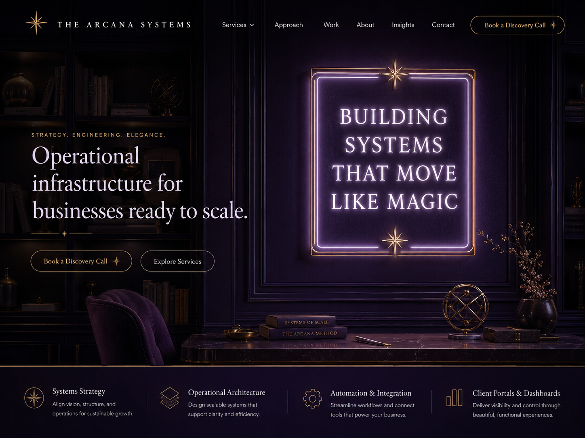

Systems Strategy
Align vision, structure, and operations for sustainable growth.

Services Overview
We design the structure beneath the work: workflows, SOPs, automations, client portals, dashboards, handoffs, and operating systems that make growth easier to hold.
Align vision, structure, and operations for sustainable growth.
Design scalable systems that support clarity, consistency, and efficiency.
Streamline workflows and connect the tools that power your business.
Deliver visibility and control through beautiful, functional experiences.
Platform-Agnostic Systems Architecture
The Arcana Systems is platform agnostic by design. We do not force your business into a predetermined tool, template, or software stack.
Instead, we assess how your business actually operates, where the friction lives, what your team needs, and which systems will create the most clarity, consistency, and scale.
Then we architect the right backend using the platforms that make sense for your business.
Your tools should support the system.
They should never become the system.
About Caitilin
Hi, I'm Caitilin.
For more than two decades, I've worked inside businesses of all sizes across recruiting, operations, administration, client service, finance, executive support, and technology.
And no matter what role I held, I kept noticing the same thing. The biggest obstacles to growth were rarely talent problems. They were operational problems.
Processes lived in people's heads. Teams created workarounds for broken systems. Founders became the bottleneck. Everyone worked harder than they should have simply to keep things moving.
What started as a habit of fixing inefficiencies eventually became a calling. Long before "Operations & Systems Architecture" had a name in my world, I was documenting processes, building workflows, streamlining onboarding, creating automations, and designing better ways of working because I genuinely couldn't ignore the friction.
I wasn't interested in doing things the way they'd always been done. I wanted to understand why they worked that way in the first place and how they could work better.
Today, I bring that same perspective to every client engagement through The Arcana Systems. I help founders and growing businesses design the operational infrastructure that supports sustainable growth from workflows, SOPs, and automations to client portals, documentation systems, and business operating systems.
Because I believe the purpose of systems isn't efficiency. It's freedom.
Freedom from being the bottleneck. Freedom from carrying every process in your head. Freedom to lead your business instead of constantly managing it.
The Arcana Systems exists to transform operational chaos into clarity, structure, and momentum, building systems that move like magic.
The Arcana Method
Analyze current workflows, tools, documentation, and operational friction.
Map the architecture before a single tool is touched.
Create the CRM, portal, SOP hub, automations, dashboard, or operating system your business needs.
Keep the system evolving through refinement, documentation, maintenance, and strategic support.
Book & Buy
Start with a strategic intensive, or buy a ready-to-use operating asset. Productized packages go straight to secure checkout. Custom work starts with intake.
Strategic Entry Point
$997
Best for: Founders who need a fast, expert read on what is broken, what to fix first, and how to stop carrying every process in their head.
Automation Blueprint
$247
Best for: Service businesses that need contract signatures, Stripe payment links, invoice delivery, paid status sync, and overdue reminders to work together.
Client Delivery
$197
Best for: Consultants, agencies, and service providers who need a clean client success workspace for onboarding, delivery, assets, tasks, and status.
A single-pane operating cockpit for sales pipeline, project health, team utilization, and monthly cash flow.
Buy the DashboardPre-built business process templates, including the gold-standard SOP layout and New Client Onboarding SOP.
Buy the KitAdvanced LLM prompts that turn messy recordings, transcripts, and notes into professional SOPs.
Buy the PackStart with the Systems Clarity Intensive, then use the roadmap to scope a focused implementation.
Request a QuoteFAQ
No. The Arcana Systems is platform agnostic. We design the system first, then recommend and build inside the tools that fit the business.
Most clients start with the Systems Clarity Intensive. It gives you a clear map of what needs to be fixed, automated, documented, or rebuilt.
No. This is operations and systems architecture. Stewardship covers system refinement and strategic support, not general administrative execution unless scoped separately.
Yes. We assess your existing stack first and only recommend a change when the current tools cannot support the system your business needs.
Ready to build something that actually works?
Use this form for custom implementation, questions before buying, or a more tailored next step. Ready-to-use packages can be purchased directly from the offer cards above.
Contact
Email
cnelson@thearcanasystems.com
Location
Phoenix, Arizona